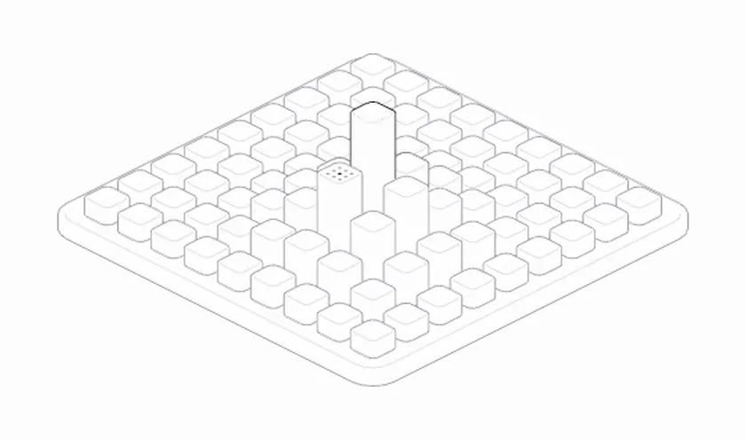
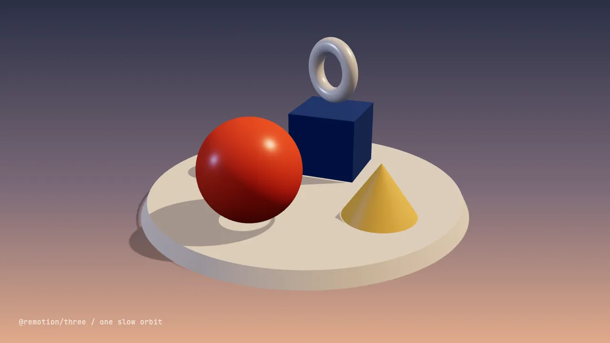
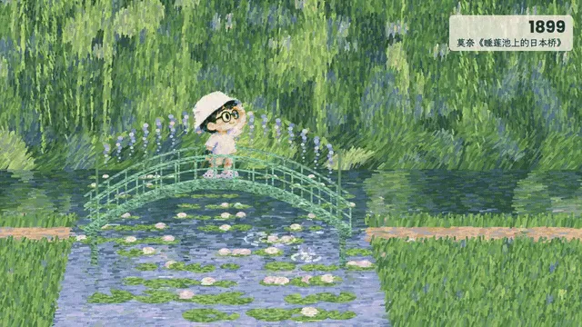
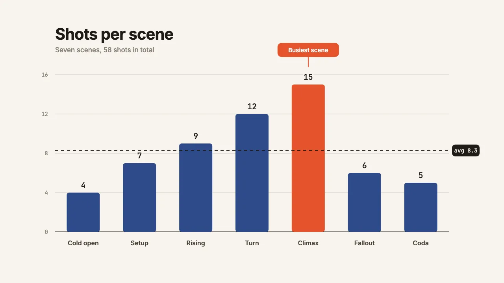

Not a place with a camera.
We checked. Twice.
Short films, music videos, explainers, carousels and the occasional poster, made out of Canvas, shaders, Three.js, ffmpeg and one headless Chrome that has seen things. Five stills from the studio's tools:



@remotion/three, four primitives on a turntable.

Nine creations, one workspace
Everything lives as editable source under creations/, where Leonardo's work stays apart from the engine. "Finished" is a spectrum.
- BenjaminA series of short films made while waiting for a very small human. Every film picks its own medium.
- Claude PopA music video where all the visuals are Three.js and Canvas 2D.
- A festa que deu ruimNicolas Fouquet throws the party of the century. The king takes notes.
- Fruit DreamsA tiny cat sails a banana. A lemon balloon offers a lift.
- SeedA coral seed travels through a GPU server in three-ink riso.
- Feliz HalloweenWe drive through Cidade de Outubro until the cars turn into pumpkins.
- Release 17A paper-coated clerk, a rock gig and a very tidy release announcement.
- Um voto. Muitos caminhos.One vote travels through candidates and becomes chairs.
- Logbook · EP1O Dev Orquestrador conducts a very busy orchestra.
Side quests in experiments/ each ask one question and then go home: cctv-memphis, figure-seek-test, hyperframes-engine-test and desk-teaser.
How a piece is born
Seven stops from a shower thought to an approved final. Every room on the way is optional.
- 1
Shower thought
Ask in chat, or say "open the desk" and let it interview you.
- 2
brief.mdEvery piece has one, and its first heading is the piece's title.
pnpm lintcries if it's missing. - 3
The Desk
Pick a vibe, gather references, plan beats against a track.
- 4
Skill time
The right skill takes over and runs its own process:
creative-studiofor production pieces,social-studiofor still posts. - 5
Render
Frames come out of code into
renders/, which can always be rebuilt. What code can't recreate, like a generated voice or still, goes tosource/. - 6
QA
Evidence goes in
qa/. At checkpoints Leonardo judges an interactive page, and his notes come back in a format agents can read. - 7
Ship it?
Only if Leonardo says so. Approved finals live in
final/with a checksum manifest.
Every piece has the same shape
A creation, a film in a series or a study: the folders never change, so any agent can walk in and find the brief.
- ├── brief.mdwhat this is; the title lives here
- ├── README.mdhow to run, rebuild and verify it
- ├── src/editable source
- ├── source/what code can't recreate
- ├── final/approved deliveries
- ├── renders/previews, frames, drafts
- ├── qa/checkpoint pages, feedback, evidence
- └── desk/the Desk's records, as plain files
The Desk
A live local studio in your browser: an interview, a Lobby of pieces, a catalog of every look the installed skills can actually make, and five rooms per piece.
- Overview
- The piece at a glance: hand-off, renders, checkpoint feedback, files.
- Board
- A reference canvas for looks, stills and tablet sketches.
- Beats
- A timing strip with the song, the beats and a sheet agents can read.
- Asks
- Requests to agents, and their answers. They wait as files until someone is listening.
- Review
- A render, frame-accurate, with notes and measured facts.
It never runs a skill or a model itself. It writes plain files beside the piece, and agents do the work.
pnpm desk:startfind or start this checkout's Desk and print its URLpnpm studio helpthe same files from the terminal: pieces, asks, beats, skillspnpm desk:agenthow an agent listens for asks filed in the roomsHouse rules
Seven rules apply to every piece. They are the only things that don't bend.
- 1Video is rendered from codeNo text-to-video and no generated presenters. The GPUs have been told.
- 2Stills may be generated with CodexEach one gets Leonardo's thumbs-up first, and its prompt is written down.
- 3Leonardo's brief beats a skill's defaultsDuration, palette, loudness, watermark: his call. Skills advise, they don't boss.
- 4Work lives in the workspace
experiments/<study>/by default,creations/<slug>/for the real thing. - 5Publishing needs an explicit goUploads, posts and gallery submissions are approved per piece, and approval doesn't roll over.
- 6Voices are cloned only on requestAnd only a voice Leonardo owns. We're not that kind of studio.
- 7Picking a manual-only skill is its manual stepThe agent reads its
SKILL.mdand does it. Nobody gets asked to type a slash command.
Say "freestyle" and the Desk, the intake and the rulings all go home early. You invent the process, the plan and the way it gets reviewed. Only the house rules stay.
46 coworkers who never take lunch
The skills live in .agents/skills/ in their upstream form: we don't edit other people's coworkers. Routing and glue live in AGENTS.md and the two house skills.
Get started
Node 22.12 or newer and pnpm 11. Arriving as an agent? Read AGENTS.md first: it has the real rules.
pnpm installlet pnpm manage the linkspnpm desk:startsay hello to the Deskpnpm studio:doctorchecks your tools (ffmpeg-full, anyone?)pnpm lintthe bouncer: briefs, media and studio checksWorking in a Git worktree? Run pnpm install, then pnpm worktree:link, so the main checkout's workspace/ follows you.